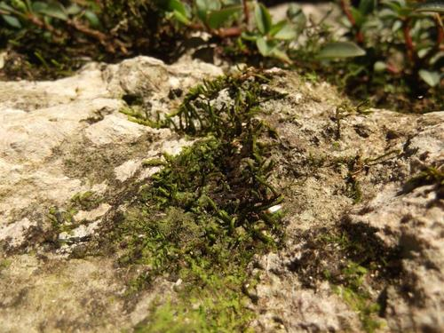

Erpodiaceae
(Erpodium Moss Family - informal)
Erpodiaceae is a family of small, pleurocarpous (creeping) mosses predominantly found in tropical, subtropical, and warm-temperate regions, often in seasonally dry climates. They typically grow as thin, appressed mats on bark or rock. Key features include broadly ovate leaves often lacking a costa, and highly reduced sporophytes with very short setae and usually no peristome.
Overview
The Erpodiaceae family represents a unique lineage of mosses adapted to warm, often seasonally dry environments. Unlike many mosses considered potentially related (like Orthotrichaceae or Grimmiaceae), Erpodiaceae are distinctly pleurocarpous, meaning they have a creeping growth habit with reproductive structures borne on short lateral branches, rather than forming erect tufts with terminal reproductive structures (acrocarpous). They typically form thin, intricate, often dark green to blackish mats tightly appressed to the substrate, usually tree bark or rock.
These mosses exhibit significant reduction in several features. The leaves are often broad and lack a costa (midrib) or possess only a very weak one. The sporophyte generation is particularly reduced, with capsules borne on extremely short setae, making them appear almost sessile amongst the leaves. Furthermore, the peristome (teeth surrounding the capsule mouth) is usually absent (gymnostomous) or rudimentary. These features are likely adaptations to their specific ecological niche, possibly related to desiccation tolerance and spore dispersal in dry conditions.
The family's distribution is primarily pantropical and subtropical. Its unusual combination of pleurocarpous growth and reduced sporophytes has made its phylogenetic placement challenging, with various studies suggesting affinities to Orthotrichales, Bryales, Hypnales, or placing it in its own distinct order, Erpodiales.
Quick Facts
- Scientific Name: Erpodiaceae
- Common Name: (Erpodium Moss Family - informal)
- Number of Genera: ~4-5 (e.g., Erpodium, Aulacopilum, Solmsiella)
- Number of Species: Approximately 20-30
- Distribution: Pantropical, subtropical, warm-temperate regions; often in seasonally dry areas.
- Evolutionary Group: Bryophytes - Bryopsida (True Mosses) - Order uncertain (Erpodiales / Orthotrichales / Bryales / Hypnales)
Key Characteristics
Erpodiaceae mosses are defined by their creeping habit, specific leaf features, and reduced sporophytes.
Gametophyte Form and Habit
The gametophyte generation is typically small and forms appressed mats:
- Habit: Plants slender, forming thin, flat, often intricate mats tightly appressed to the substrate (bark or rock). Pleurocarpous growth form.
- Size: Small mosses, individual stems often only 1-2 cm long.
- Color: Typically dull green, dark green, brownish, or blackish, especially when dry.
- Stems: Creeping, irregularly branched. Central strand absent.
- Substrate: Primarily epiphytic (bark) or epilithic (rock) in warm climates.
Leaves (Phyllids)
Leaves are often broad and lack a strong costa:
- Arrangement & Shape: Usually crowded and overlapping (imbricate), appressed to somewhat spreading when dry, spreading more when moist. Shape typically broadly ovate, oblong, obovate, or spatulate, usually strongly concave. Apex is often rounded, obtuse, or broadly acute.
- Costa (Midrib): Characteristically absent or very short, weak, and single or double.
- Margins: Usually plane and entire (smooth), sometimes slightly wavy.
- Cells: Laminal cells typically isodiametric (hexagonal, rhomboidal, rounded-quadrate) or shortly rectangular, usually thick-walled and smooth (echlorophyllose basal cells may be present but distinct cancellinae are absent).
- Leaf Dimorphism: Some genera (e.g., Aulacopilum) show dimorphism, with dorsal leaves differing in shape or size from lateral/ventral leaves.
Reproductive Structures
- Sexual Condition: Variable, autoicous or dioicous.
- Archegonia & Antheridia: Borne on very short, specialized lateral branches, typical of pleurocarpous mosses. Perichaetial leaves often larger, more erect, and sheathing than vegetative leaves.
Sporophyte
The sporophyte is highly reduced and often inconspicuous:
- Seta: Extremely short (often < 1 mm), sometimes appearing almost absent, keeping the capsule nestled amongst the perichaetial leaves.
- Capsule: Erect and symmetric, small, typically ovate or subglobose, thin-walled.
- Operculum: Usually small, conical or shortly rostrate (beaked).
- Peristome: Typically absent (gymnostomous), or occasionally present as a very rudimentary membrane or fragile papillae.
- Calyptra: Small, typically mitrate (conical) or sometimes cucullate (hood-shaped), often covering only the operculum, smooth or sometimes hairy.
Spores
Spores are often relatively large, spherical or irregular, sometimes appearing multicellular due to precocious germination.
Chemical Characteristics
Likely possess adaptations related to desiccation tolerance common in mosses from seasonally dry environments, but specific chemical profiles are not widely highlighted.
Field Identification
Identifying Erpodiaceae requires recognizing their unique combination of creeping habit, broad ecostate leaves, and reduced, nearly sessile capsules, typically in warm climates.
Primary Identification Features (Hand Lens Level)
- Growth Form & Habitat: Look for small, thin, flat mats growing tightly appressed to tree bark or rock surfaces, primarily in tropical, subtropical, or warm-temperate regions.
- Broad, Ecostate Leaves: Observe the relatively broad (ovate, spatulate) leaves that lack a distinct midrib (costa) or have only a very faint one.
- Nearly Sessile Capsules: If sporophytes are present, look for small, ovate or rounded capsules nestled amongst the leaves with almost no visible stalk (seta).
- Lack of Peristome: Mature, open capsules will lack teeth around the mouth.
Secondary Identification Features
- Dark Color When Dry: Mats often appear dark green or blackish when dry.
- Leaf Concavity: Leaves are typically concave.
- Isodiametric Leaf Cells: Cells appear roughly uniform and dot-like under a strong hand lens (requires good optics).
Seasonal Identification Tips
- Year-Round: Gametophytes are perennial and identifiable by habit and leaf characteristics, especially in regions without prolonged freezing.
- Variable (often after wet season): Sporophytes may mature seasonally but can be hard to spot due to their small size and immersed position.
Common Confusion Points
Distinguishing Erpodiaceae from other small, creeping bryophytes:
- Lejeuneaceae (Liverworts): Some leafy liverworts form similar appressed mats on bark. Distinguished by liverwort features: distinct ventral underleaves (usually), bilobed leaves (often), different cell structure, and very different sporophytes (black capsule on translucent seta emerging from a perianth).
- Fabroniaceae / Leskeaceae: Other small, pleurocarpous epiphytic mosses. Usually have narrower, pointed leaves, often possess a distinct costa, and typically have well-developed (though sometimes small) double peristomes on capsules elevated by distinct setae.
- Orthotrichaceae (e.g., Zygodon): While often epiphytic, they are typically acrocarpous (forming tufts, not flat mats) or pseudo-pleurocarpous, have costate leaves, and capsules with distinct setae and peristomes.
- Small Hookeriaceae / Daltoniaceae: Some tropical pleurocarps, but often have bordered leaves or different cell patterns, and usually possess peristomes.
Field Guide Quick Reference
Look For:
- Habitat: Bark/rock in warm climates
- Creeping, appressed mats (pleurocarpous)
- Small size, often dark when dry
- Broad leaves, costa absent or weak
- Capsules small, nearly sessile (seta very short)
- Peristome absent
Key Distinctions:
- vs. Liverworts: Underleaves, leaf lobing, sporophyte type.
- vs. Fabroniaceae/Leskeaceae: Costa presence/strength, leaf shape, peristome presence, seta length.
- vs. Orthotrichaceae: Growth form (mats vs. cushions), costa, seta length, peristome.
Notable Examples
The family includes several genera adapted to warm climates.

Erpodium domingense
(Domingan Erpodium Moss)
A representative species of the type genus, found in subtropical and tropical America. Forms thin, dark green mats on bark or rock. Leaves are broadly ovate-spatulate, concave, ecostate, with rounded apices. Capsules are ovate, nearly sessile, gymnostomous.

Aulacopilum glaucum
(Glaucous Aulacopilum Moss)
Found in Asia and Oceania. Known for its leaf dimorphism: dorsal leaves are smaller and appressed, while lateral leaves are larger and more spreading. Often has a somewhat glaucous (bluish-green) appearance. Capsules are reduced and gymnostomous.
Phylogeny and Classification
Erpodiaceae is classified within the class Bryopsida. Its phylogenetic position is highly uncertain and has been a subject of considerable debate among bryologists. The family's unique combination of pleurocarpous growth habit (typically associated with Hypnanae subclass) and sporophyte features sometimes seen in acrocarpous groups (like Orthotrichales or Bryales) makes it difficult to place.
Various classifications have proposed affinities with different major lineages:
- Orthotrichales: Suggested due to similarities in capsule structure (though highly reduced) and epiphytic habit shared with Orthotrichaceae.
- Bryales: Some analyses placed it near families within this large order.
- Hypnales: The pleurocarpous habit naturally suggests a link to this large subclass, perhaps as an early diverging lineage or one showing extreme reduction.
- Erpodiales: Often placed in its own distinct order to reflect its unique combination of characters and uncertain relationships to other major groups. This is a common treatment in modern classifications pending further resolution.
Molecular studies have also yielded conflicting or ambiguous results, sometimes placing it near Orthotrichales, sometimes near Hypnales, or as an isolated lineage. Resolving the precise phylogenetic position of Erpodiaceae remains a challenge in moss systematics.
Position in Plant Phylogeny
- Kingdom: Plantae
- Clade: Embryophyta (Land Plants)
- Division: Bryophyta (Mosses)
- Class: Bryopsida
- Order: Erpodiales / Orthotrichales / Bryales / Hypnales (Placement Highly Uncertain)
- Family: Erpodiaceae
Evolutionary Significance
Erpodiaceae is significant for understanding moss evolution:
- Pleurocarpy Evolution: Its unique combination of pleurocarpy with features sometimes seen in acrocarps raises questions about the evolution and plasticity of growth forms in mosses.
- Sporophyte Reduction: Exemplifies extreme reduction of the sporophyte (seta, peristome), likely linked to adaptation to specific environmental conditions (e.g., desiccation, dispersal strategy).
- Adaptation to Xeric Environments: Represents a lineage successful in warm, often seasonally dry epiphytic or epilithic habitats.
- Phylogenetic Enigma: Its uncertain position highlights limitations in current understanding and the need for further research to resolve deep relationships within Bryopsida.